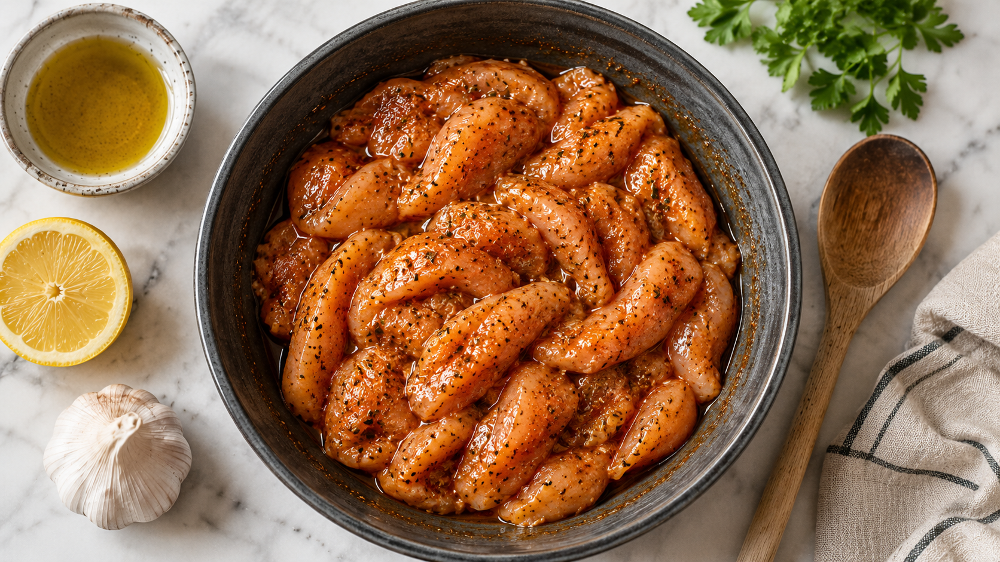

1
The chicken

Slice the breasts thin on the diagonal and toss with a tablespoon of olive oil, a teaspoon each of garlic powder and paprika, half a teaspoon of italian herbs, a teaspoon or two of lemon juice, and salt and pepper. Rest twenty to thirty minutes — two to four hours is better.
Air fryer at 190°C, single layer, ten to fourteen minutes, flipping halfway. Done at golden edges and 75°C internal.